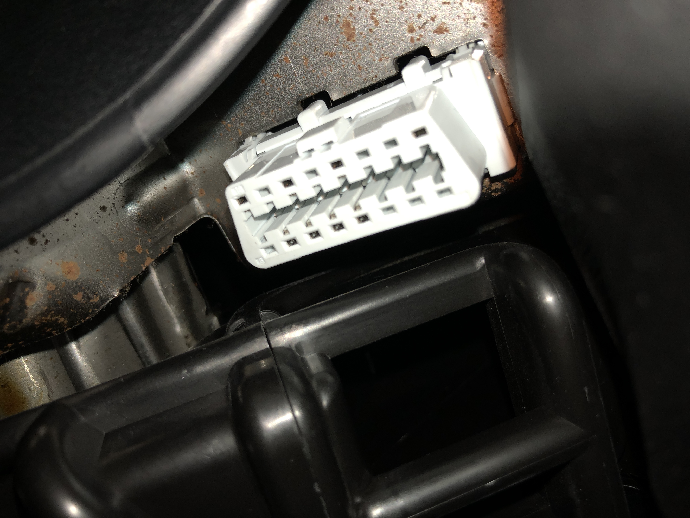

class: center, top # Talking to your car<br/>with CAN bus .right[🚘<sup><sup>💬</sup></sup>] .title-info[ IoT Devfest 3 </br> 27.01.2018 <br/> <br/> Sandeep Mistry | @sandeepmistry ] --- # .center[Why?] -- * Collect sensor data from your car to analyze -- * Learn -- * How diagnostic devices and hardware enabled mobile apps like [Automatic](https://www.automatic.com) and [Dash](https://dash.by) work -- * What data is available to them or other devices connected to the diagnostic port -- * How components of your car interface with each other --- # .center[⚠️ Caution ⚠️] -- * Be careful when experimenting! * There is a possiblity that your vehicle's electronics might get damaged or disabled -- * Moving cars are dangerous! * They are fast and heavy -- **Use the content of this presentation at your own risk!** --- # .center[OBD-II] -- * OBD-II = On-board diagnostic v2 -- * Mandatory for cars manufactured in the US since 1996 -- * Since 2008, all cars sold in the US are required to use the ISO 15765-4 signal standard (more on this later) --- # .center[OBD-II connector] * Usually found under the steering column -- .center[  ] --- count: false # .center[OBD-II connector] .center[ <img style="max-width: 428px; max-height: 328px; width: 45%; height: auto%" src="http://opengarages.org/handbook/ebook/images/000046.jpg" /> .image-attribution[ THE CAR HACKER’S HANDBOOK - Figure 2-3: CAN pins cable view on the OBD-II connector ] ] -- * Also contains other standard pins and some manufacturer specific ones. -- .center[**We'll focus on CAN bus today.**] ??? * **WARNING** the 12V pin is connected to the car battery, if you source power from it you when the car is idle, the car's battery drains --- # .center[CAN bus] -- * Controller Area Network (CAN) -- * Developed in 1983 by Bosch, officially released in 1986 -- * Two wires, with differential signal * 0: CANL 0V and CANH 5V * 1: both CANL and CANH 2.5V -- * Both ends of the CAN bus require a termination resistor (120 ohms) --- count: false # .center[CAN bus] * All packets are broadcasted -- * Has an arbritration protocol to control the priority of packets -- * Each CAN node has an CAN controller, and CAN transceiver. They are connected by two pins: RX and TX. --- # .center[CAN bus - example packet] .center[ <img style="max-width: 800px; max-height: 257px; width: 100%; height: auto;" src="http://opengarages.org/handbook/ebook/images/000048.jpg" /> .image-attribution[ THE CAR HACKER’S HANDBOOK - Figure 2-4: Format of standard CAN packets ] ] -- * ID - standard 11-bit (shown above) or extended 29-bit, packets with lower ID have higher priority --- count: false # .center[CAN bus - example packet] .center[ <img style="max-width: 800px; max-height: 257px; width: 100%; height: auto;" src="http://opengarages.org/handbook/ebook/images/000048.jpg" /> .image-attribution[ THE CAR HACKER’S HANDBOOK - Figure 2-4: Format of standard CAN packets ] ] * DLC - Data length code, length of data --- count: false # .center[CAN bus - example packet] .center[ <img style="max-width: 800px; max-height: 257px; width: 100%; height: auto;" src="http://opengarages.org/handbook/ebook/images/000048.jpg" /> .image-attribution[ THE CAR HACKER’S HANDBOOK - Figure 2-4: Format of standard CAN packets ] ] * Data - up to 8 bytes of data, usually shorter messages are padded to 8 bytes --- # .center[Other standards/protocols] -- * [ISO 15765-4](https://www.iso.org/standard/67245.html) - Road vehicles - Diagnostic communication over Controller Area Network (DoCAN) -- * ISO 15765 CAN - 250 or **500 kbit/s** baud rate -- * [SAE J1979](https://law.resource.org/pub/us/cfr/ibr/005/sae.j1979.2002.pdf) - which defines: * Modes of operation (more on this soon) * Parameter ID's (PIDs) - manufacturers may define their own as well --- # .center[Standard Addressing IDs] -- * 0x7df * Requests from external test equipment -- * 0x7e8 to 0x7ef (ECU #1 to 7) * Response from ECU to external test equipment -- * 0x7e0 to 0x7e7 (ECU #1 to 7) * Request to specific ECU -- **ECU = Engine Control Unit** --- # .center[Extended Addressing IDs] -- * 0x18db33f1 * Requests from external test equipment -- * 0x18daf1XX * Response from ECU #XX -- * 0x18daXXf1 * Request to ECU #XX -- You'll mostly see standard ID's used in online resources, however some vehicles (like Honda) only support Extended ID's. -- **This is still compliant with the spec.** --- # .center[SAE J1979 modes] -- * **01 - Show current data** -- * 02 - Show freeze frame data * **03 - Show stored Diagnostic Trouble Codes** * **04 - Clear Diagnostic Trouble Codes and stored values** * 05 - Test results, oxygen sensor monitoring (non CAN only) --- count: false # .center[SAE J1979 modes] * 06 - Test results, other component/system monitoring (Test results, oxygen sensor monitoring for CAN only) * 07 - Show pending Diagnostic Trouble Codes (detected during current or last driving cycle) * 08 - Control operation of on-board component/system * **09 - Request vehicle information** * 0A - Permanent Diagnostic Trouble Codes (DTCs) (Cleared DTCs) --- # .center[SAE J1979 PIDs] -- * PID = Parameter ID -- * Wikipedia has a great summary of the standard PID's that each mode supports: https://en.wikipedia.org/wiki/OBD-II_PIDs -- * You can query what is supported by the vehicle (more on this later) --- # .center[Packet format] -- Request ``` +----------------------------------------------------------+ | <# of additional bytes> <mode> <pid> <A> <B> <C> <D> <E> | +----------------------------------------------------------+ ``` -- Response ``` +-----------------------------------------------------------------+ | <# of additional bytes> <mode + 0x40> <pid> <A> <B> <C> <D> <E> | +-----------------------------------------------------------------+ ``` -- **Note:** Some responses, like reading the VIN (mode 09, pid 0x02), can return more than 5 bytes of data. The diagnostics device needs to request the additional bytes after receiving the response. --- # .center[Hardware] -- .center[Arduino (or compatible) operating at 5V] .center[ <img style="max-width: 550px; max-height: 330px;" src="https://store-cdn.arduino.cc/usa/catalog/product/cache/1/image/520x330/604a3538c15e081937dbfbd20aa60aad/a/0/a000066_featured.jpg"/> ] --- count: false # .center[Hardware] A shield or breakout board that is based on a<br/>Microchip MCP2515 CAN Controller, which has an SPI interface -- * [Seeed studio - CAN-BUS Shield V1](https://www.seeedstudio.com/CAN-BUS-Shield-V2-p-2921.html) * [Sparkfun - CAN-BUS Shield](https://www.sparkfun.com/products/13262) * Ebay/Aliexpress breakout .center[ <img style="width: auto; height: 150px;" src="https://statics3.seeedstudio.com/seeed/file/2017-08/bazaar528529_img_2653a.jpg"/> <img style="width: auto; height: 150px;" src="https://cdn.sparkfun.com//assets/parts/1/0/4/6/6/13262-01.jpg"/> <img style="width: auto; height: 150px;" src="https://i.ebayimg.com/images/g/yBIAAOSwpDdVUILN/s-l400.jpg"/> ] --- count: false # .center[Hardware] [OBD-II to DB9 cable](https://www.sparkfun.com/products/10087) or Ebay/Aliexpress OBD-II plug .center[ <img style="width: auto; height: 300px;" src="https://cdn.sparkfun.com//assets/parts/4/3/1/0/10087-00.jpg"/> <img style="width: auto; height: 300px;" src="https://i.ebayimg.com/images/g/ItcAAOSwH4xZ4Jga/s-l1600.jpg"/> ] --- # .center[Hardware - alternative (WIP)] -- .center[Espressif ESP32 based board] .center[ <img style="max-width: 562px; max-height: 516px; height: 300px" src="http://s2.electrodragon.com/wp-content/uploads/2016/12/wroom-32-devkitC-1.jpg"/> ] -- * Has built-in CAN controller, which is compatible with the NXP SJA1000 --- count: false # .center[Hardware - alternative (WIP)] .center[3.3V CAN Transceiver - like TI SN65HVD230] .center[ <img style="width: auto; height: 300px; margin-top: -35px;" src="https://i.ebayimg.com/images/g/qj8AAOSwqXZZ2lVP/s-l1600.jpg"/> ] -- ⚠️ **WARNING** ⚠️ most CAN transceivers have a built-in 120 ohm termination resistor, you'll need to remove it! --- # .center[Software] -- There are many existing Arduino libraries for the MCP2515 -- * However, most are not really "Arduino" like (use structures, etc), as they are based on the C SDK --- count: false # .center[Software] Developed a new one: https://github.com/sandeepmistry/arduino-CAN -- * Adheres the existing packet based conventions seen in the UDP and Wire (I2C) Arduino API's, this includes a Stream based API -- * Supports both the MCP2515 and ESP32's built-in CAN controller with the same API -- * Look for "CAN" in the Arduino IDE's library manager --- # .center[Setup] -- ```arduino #include <CAN.h> // include library void setup() { Serial.begin(9600); // CAN controller board has 8 MHz crystal on-board CAN.setClockFrequency(8e6); // start the CAN controller with 500 kbps bitrate if (!CAN.begin(500e3)) { // failure Serial.println("CAN initilization failed!"); while (1); } // set filter for id are interested in receiving from, // others will be ignored CAN.filter(0x7e8); // or CAN.filterExtended(0x18db10f1); } ``` --- # .center[Sending a packet] -- ```arduino void loop() { // send packet with ID 0x7df, // packet will be 8 bytes in length, // unwritten bytes are set to 0x00 CAN.beginPacket(0x7df, 8);// or CAN.beginExtendedPacket(0x18db33f1, 8); CAN.write(0x01); CAN.endPacket(); // ... delay(1000); } ``` --- # .center[Receiving a packet] -- ```arduino void loop() { // query if a packet has been received if (CAN.parsePacket()) { // received a packet long id = CAN.packetId(); // process packet data while (CAN.available()) { byte b = CAN.read(); // ... } } // ... } ``` --- # .center[Reading supported<br/>mode 01 PIDs] -- * Read PID's: 0x00, 0x20, 0x40, 0x60, 0x80, 0xa0, 0xc0, 0xe0 -- * Response is 32-bit mask of supported PIDs --- count: false # .center[Example] Response Value * 0xBE1FA813 -- Binary * 1011 1110 0001 1111 1010 1000 0001 0011 -- Supported PIDs .column5[ * 0x01 * 0x03 * 0x04 * 0x05 ] .column5[ * 0x06 * 0x07 * 0x0C * 0x0D ] .column5[ * 0x0E * 0x0F * 0x10 * 0x11 ] .column5[ * 0x13 * 0x15 * 0x1C * 0x1F ] .column5[ * 0x20 ] --- # .center[Supported mode 01 PIDs] -- Request ``` +-----------+-------------------------------------------+ | ID: 0x7df | Data: 0x02 0x01 <pid> 0x00 0x00 0x00 0x00 | +-----------+-------------------------------------------+ ``` -- Response ``` +-----------+----------------------------------------+ | ID: 0x7e8 | Data: 0x06 0x41 <pid> A B C D xx xx | +-----------+----------------------------------------+ ``` --- count: false ```arduino unsigned long readSupportedPids(int pid) { CAN.beginPacket(0x7df, 8); CAN.write(0x02); // number of additional bytes CAN.write(0x01); // mode 01 - show current data CAN.write(pid); // PID CAN.endPacket(); // wait for response while (CAN.parsePacket() == 0 || CAN.read() != 6 || // correct length CAN.read() != 0x41 || // correct mode (0x40 + mode 01) CAN.read() != pid); // correct PID unsigned long pidsSupported = 0; // read byte by byte and store as 32-bit number for (int i = 0; i < 4; i++) { pidsSupported <<= 8; pidsSupported |= CAN.read(); } return pidsSupported; } ``` --- ```arduino void loop() { // read PID value in increments of 32, // until the next PID block is not supported for (int pid = 0x00; pid < 0xe0; pid += 0x20) { unsigned long pidsSupported = readSupportedPids(pid); // process PID mask // ... if ((pidsSupported & 0x00000001) == 0x00000000) { // next round not supported, all done break; } } // ... } ``` --- ## .center[Honda Civic 2008 - Supported PIDs] .font14[ .column3[ * 0x01 - Monitor status since DTCs cleared * 0x03 - Fuel system status * 0x04 - Calculated engine load * **0x05 - Engine coolant temperature** * 0x06 - Short term fuel trim—Bank 1 * 0x07 - Long term fuel trim—Bank 1 * 0x0B - Intake manifold absolute pressure * **0x0C - Engine RPM** * **0x0D - Vehicle speed** * 0x0E - Timing advance * **0x0F - Intake air temperature** * **0x10 - MAF air flow rate** ] .column3[ * **0x11 - Throttle position** * 0x13 - Oxygen sensors present (in 2 banks) * 0x15 - Oxygen Sensor 2 * 0x1C - OBD standards this vehicle conforms to * 0x1F - Run time since engine start * 0x21 - Distance traveled with malfunction indicator lamp (MIL) on * 0x2E - Commanded evaporative purge * **0x2F - Fuel Tank Level Input** * 0x30 - Warm-ups since codes cleared * 0x31 - Distance traveled since codes cleared * 0x32 - Evap. System Vapor Pressure ] .column3[ * 0x33 - Absolute Barometric Pressure * 0x34 - Oxygen Sensor 1 * 0x3C - Catalyst Temperature: Bank 1, Sensor 1 * 0x41 - Monitor status this drive cycle * 0x42 - Control module voltage * 0x43 - Absolute load value * 0x44 - Fuel–Air commanded equivalence ratio * 0x45 - Relative throttle position * 0x47 - Absolute throttle position B * 0x49 - Accelerator pedal position D * 0x4A - Accelerator pedal position E * 0x4C - Commanded throttle actuator ] ] ??? --- # .center[Reading Engine RPM] -- * Mode 01 -- * PID 0x0c -- * Reponse data is 2 bytes -- <br/> .center[RPM = (256 * A + B) / 4] --- count: false # .center[Reading Engine RPM] Request ``` +-----------+------------------------------------------+ | ID: 0x7df | Data: 0x02 0x01 0x0c 0x00 0x00 0x00 0x00 | +-----------+------------------------------------------+ ``` -- Response ``` +-----------+--------------------------------------+ | ID: 0x7e8 | Data: 0x04 0x41 0x0c A B xx xx xx xx | +-----------+--------------------------------------+ ``` --- ```arduino void loop() { CAN.beginPacket(0x7df, 8); CAN.write(0x02); // number of additional bytes CAN.write(0x01); // mode 01 - show current data CAN.write(0x0c); // engine RPM CAN.endPacket(); // wait for response while (CAN.parsePacket() == 0 || CAN.read() != 4 || // correct length CAN.read() != 0x41 || // correct mode CAN.read() != 0x0c); // correct PID // engine RPM = (A * 256 + B) / 4 float rpm = ((CAN.read() * 256.0) + CAN.read()) / 4.0; Serial.print("Engine RPM = "); Serial.println(rpm); // ... delay(1000); } ``` --- class: center # Other cool stuff <br/> <iframe width="560" height="315" src="https://www.youtube.com/embed/iXumj3o5MwY?rel=0" frameborder="0" allow="autoplay; encrypted-media" allowfullscreen></iframe> --- # .center[What's going on?] -- * There's lots of regular (non-diagnostic) traffic on the CAN bus, which is specific to the car -- * Some of the messages are for the dashboard --- # .center[Example trace of car parked] .column2[ ``` 0x18E: 00 00 3E 0x39: 00 1B 0x136: 00 02 00 00 00 00 00 39 0x13F: 00 00 00 00 00 00 00 32 **0x17C: 00 00 03 BA 00 00 00 39** **0x164: 04 00 00 14 BE 00 00 29** 0x18E: 00 01 00 0x136: 00 02 00 00 00 00 00 0C 0x13F: 00 00 00 00 00 00 00 05 0x324: 6E 36 30 A0 00 00 00 05 0x465: 8E C8 47 53 2F 34 04 ``` ] -- .column2[ From: [@Knio](https://github.com/Knio)'s [carhack](https://github.com/Knio/carhack/blob/master/Cars/Honda.markdown) Github repo ID 0x17C * C,D - RPM ID 0x164 * E,F - Vehicle Speed ] --- # .center[Security] -- ** Since there's no security on the CAN bus, any node can mimic another.** -- In the video, they have a CAN node connected which sends packets with the same ID's that the dashboard is listening for, but with "fake" data. --- # .center[What's next?] -- * Debug why the ESP32 setup isn't working -- * Create a higher level OBD-II library that uses the CAN library -- * Collect data --- # .center[Alternatives] -- * [macchina](https://www.macchina.cc): based on Atmel SAM3X8E (same MCU as Arduino Due), in a nice OBD-II form factor -- * Particle.io: [carloop.io](https://carloop.io) -- * [comma.ai](https://comma.ai): [panda OBD-II Dongle](https://shop.comma.ai/products/panda-obd-ii-dongle) -- * ELM327 - Bluetooth, WiFi, USB -- * Linux - has support for various CAN controllers, including the MCP2515 -- ⚠️ **WARNING** ⚠️ be careful about exposing the CAN bus over Bluetooth or WiFi --- # Slides https://sandeepmistry.github.io/slides/iot-devfest-3/ <br/> # Useful Links * Car Hacker's Handbook - OpenGarages: http://opengarages.org/handbook/ * OBD-II PIDs - Wikipedia: https://en.wikipedia.org/wiki/OBD-II_PIDs